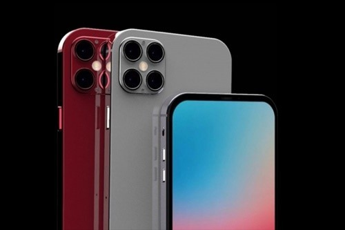

목차
역사
최초의 스마트폰은 사이먼(Symon)으로 추정된다. IBM사가 1992년에 설계하여 그해에 미국 네바다 주의 라스베이거스에서 열린 컴댁스에서 컨셉 제품으로 전시되었다. 1993년에 대중에게 공개되었고 벨사우스에게 팔렸다. 휴대 전화의 기능을 할 뿐 아니라 주소록, 세계 시각, 계산기, 메모장, 전자 우편, 팩스 송수신, 오락까지 할 수 있었다. 전화 번호를 누르기 위한 물리적인 단추가 없이 터치 스크린을 사용하여 손가락으로 전화 번호를 입력할 수 있었다. 또, 팩시밀리와 메모를 수행하기 위해 부가적인 스타일러스 펜을 사용할 수 있었다. 문자열 또한 화면 상의 키보드로 입력이 가능하였다. 오늘날의 표준에서 사이먼은 매우 저가 제품으로 여겨져 있으나 당시에는 믿기지 못할 정도로 기능이 고급이었다고 평가 받았다.
안드로이드
안드로이드(영어:Android)는 휴대 전화를 비롯한 휴대용 장치를 위한 운영 체제와 미들웨어, 사용자 인터페이스 그리고 표준 응용 프로그램(웹 브라우저, 이메일 클라이언트, 단문 메시지 서비스(MMS) 등)을 포함하고 있는 소프트웨어 스택이자 모바일 운영 체제이다. 안드로이드는 개발자들이 자바와 코틀린 언어로 응용 프로그램을 작성할 수 있게 하였으며, 컴파일된 바이트 코드를 구동할 수 있는 런타임 라이브러리를 제공한다. 또한 안드로이드 소프트웨어 개발 키트를 통해 응용 프로그램을 개발하는 데 필요한 각종 도구와 응용 프로그램 인터페이스(API)를 제공한다. 안드로이드는 리눅스 커널 위에서 동작하며, 자바와 코틀린으로 앱을 만들어 동작한다. 또한 다양한 안드로이드 시스템 구성 요소에서 사용되는 C/C++ 라이브러리들을 포함하고 있다. 안드로이드는 기존의 자바 가상 머신과는 다른 가상 머신인 안드로이드 런타임을 통해 자바와 코틀린으로 작성된 응용 프로그램을 별도의 프로세스에서 실행하는 구조로 되어 있다. 2005년에 안드로이드 사를 구글에서 인수한 후 2007년 11월에 안드로이드 플랫폼을 휴대용 장치 운영 체제로서 무료 공개한다고 발표한 후 48개의 하드웨어, 소프트웨어, 통신 회사가 모여 만든 오픈 핸드셋 얼라이언스(Open Handset Aliance, OHA) 에서 공개 표준을 위해 개발하고 있다. 구글은 안드로이드의 모든 소스 코드를 오픈 소스 라이선스인 아파치 v2 라이선스로 배포하고 있어 기업이나 사용자는 각자 안드로이드 프로그램을 독자적으로 개발을 해서 탑재할 수 있다. 또한 등록한 개발자들이 소비자에게 응용 프로그램을 판매할 수 있는 구글 플레이를 제공하고 있으며, 이와 별도로 각 제조사 혹은 통신사별 응용 프로그램 마켓이 함께 운영되고 있다.
아이폰
아이폰(영어:iphone)은 2007년 1월 9일, 애플이 발표한 휴대 전화
시리즈이다. 미국 샌프란시스코에서 열린 맥월드 2007에서 애플의
창업자 중 한명인 스티브 잡스가 발표했다. 그 뒤로 애플은 해마다
새로운 아이폰 모델과 iOS 업데이트를 출시해왔다. 2018년 11월 1일
기준으로, 2,200,000,000(22억)대 이상의 아이폰이 판매되었다.
아이폰의 사용자 인터페이스는 가상 키보드를 갖춘 멀티 터치 화면으로
구성된다. 아이폰은 셀룰러 망이나 와이파이에 연결되며, 통화,
웹 브라우징, 사진 촬영, 음악 재생, 이메일과 텍스트 메시지 송수신을
할 수 있다. 아이폰 런칭 이후 더 많은 기능들이 추가되었는데,
여기에는 더 큰 화면 크기, 동영상 촬영, 방수 기능, 앱 스토어를
경유한 서드파티 모바일 앱의 설치 기능, 접근성 지원이 포함된다.
2017년까지 아이폰은 전면 패널에 사용자를 홈 스크린으로 복귀시키는
하나의 버튼을 갖춘 레이아웃을 사용하였다. 2017년 이후로,
더 값비싼 아이폰 모델들은 제스처 인식에 의해 앱 전환 활성화가
가능한, 베젤리스에 가까운 전면 화면 디자인으로 전환하였다.
1세대 아이폰은 모바일 전화 산업 면에서 "혁명적인"(revolutionary),
"게임 체인저"(game changer)라는 용어로 기술되었으며 차기 모델들 또한
찬사를 받았다. 아이폰은 스마트폰과 슬레이트 폼 팩터를 보급하는데 주된
기여를 하였으며 스마트폰 앱과 앱 경제를 위한 커다란 시장을 창출하였다.
2017년 1월 기준으로, 애플의 앱 스토어에는 아이폰을 대상으로 2,200,000개
이상의 애플리케이션이 포함되었다.
아이폰은 구글의 안드로이드와 함께 세계 최대의 2대 스마트폰 플랫폼
가운데 하나이다.
샘플
| 스마트폰샘플 |
|---|
 |
2020년 출시 스마트폰
| 이름 | 사진 | 제조사 | 특징 |
|---|---|---|---|
| 갤럭시 노트 20 |

|
Samsung |
|
| 갤럭시 Z Fold 2 |

|
Samsung |
|
| 갤럭시 Z Flip | Samsung |
|
|
| 아이폰 12 |  | Apple |
|
Copyright 2020 by Wikipedia